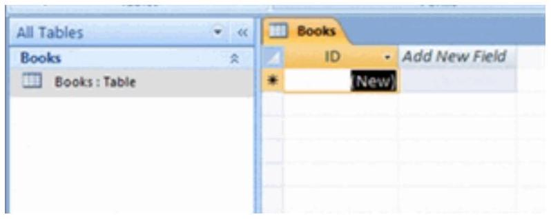

Database Design and Tables
Thinking about Database Design
Introduction

The first step in creating a database is to think about why you need it—what is its purpose? Once you know the answer, you can begin designing your own database. Ask yourself questions like What kinds of information will it store? How will I have to break down this information so it can be stored in my database? How will I use the data once it's in there?
In this lesson, we'll walk you through the steps of database design using a bookstore scenario. You will determine the purpose of the database and plan the tables and fields you will need for a simple bookstore database.
Designing a database: The Ready-2-Read bookstore scenario
The best way to learn about designing a database is to jump right in to the process. Let's pretend we work for the Ready-2-Read bookstore, and we need to build a database for the store to use. Let's think about what we might need the database to do for us.
The following diagram shows that we have customers and sell books via orders, both in the store and online.

The store needs a way to keep track of these things.
Determine the purpose of the database
The first step of designing a database is to determine the purpose of the database. What do we need it to do?
At Ready-2-Read, our customers will place orders for books. At the very least, we will want our database to track the books we sell, the customers we sell them to, and the date of each of the orders.
The database will also be able to tell us where our customers live when we need to send them books. Additionally, we can use it to track our sales or to make a bestseller list to post in the store.
Plan database tables
Once we've established its purpose, we can begin brainstorming about how to break up the information into the tables the database will need to store data. Recall that a table is a collection of records, and each record is broken up into the smallest pieces of needed information, called fields.
Because we're planning a database to track our customers, the books we have, and the orders our customers place, we will need a table for each one of these.

TIP: Keep your database usable to others by giving your tables simple, easy-to-understand names.
Plan table fields
Once you know what tables you need, the next step is deciding what fields belong in each table. Remember that fields are the smallest chunk of information in any record.
Let's look at our Ready-2-Read bookstore example again. There will be several fields in our Customers table. We'll obviously want each customer's first name and last name. We'll also need an address if we need to send a customer his order. Email will be necessary if we need to contact the customer if there is an issue with the order.
Customers
First Name
Last Name
Street
City
State
Zip Code
EmailWe will also need several fields in the Books table. Title and Author make sense for books. We'll need a Price for each book. Category will help us know what type of books sell the best so we can order more books that fit into this category.

The Orders table will have fewer fields. We'll need this table to track the Customer who is placing the order, the Book the customer is ordering, and the Date the order is placed.

Don't worry if your plan doesn't include every possible field you may need. Access lets you add fields to tables whenever you need another one!
Building the Database: Setting up Tables and Fields
Introduction

Now that we have a handle on what the database should look like, we need to work on setting up our tables and the fields within these tables.
In this lesson, we'll walk you through the steps of setting up a database in Access 2007. You'll be setting up tables according to the plan for our bookstore scenario. You'll also be setting up the fields for each table, including establishing what data types can be entered in a given field.
Creating a new database with Access
When you launch Access 2007, you will see the Getting Started window. In the left pane, the template categories—including the featured local templates—are listed, as well as the categories on Office Online. Templates are prebuilt databases focused on a specific task that you can download and use immediately.
You will also see the New Blank Database option, which allows you to build your own database from scratch.

When you choose the New Blank Database option at the top of the window, you will be prompted to rename the database from the default name, which is Database1.accdb. Rename the database whatever you want. In the example below, we named the database Ready2Read because it's the name of the store in our scenario.

Click Create to finish naming the database.
Setting up tables
The new database opens with one table showing as a default. It also defaults to naming this table Table1 in both the navigation pane and the Table tab itself. You will want to name your tables based on your database design plan.

Naming a table
To give the table a unique name, you must first click on the Microsoft Office button in the upper-left corner of the application.

Next, select Save from the menu. The Save As dialog box will appear to let you save the table whatever name you want.

The new table names appear in both the navigation pane and the Table tab itself, as you can see in the picture below.
TIP: Give your tables logical, easy-to-understand names.
To rename a table:
With the table closed, right-click the Table you want to rename in the navigation pane. Select the Rename option that appears in the menu.

The table name will be highlighted and a cursor will appear, which means you can now type the new name right there. Left-click anywhere outside of the table name to make the change.
To close a table:
There are several ways to close an active table. You can right-click the Table tab and choose Close from the menu.

A more common method is to click the X that appears in the top-right corner of the active database object window.

To open a table:
To open a table, right-click the Table name of the table you want to open in the navigation pane, then choose Open from the menu.

A more common method is to double-click the table name in the navigation pane. The selected table will open in the active database object window.
Adding more tables to the database
By default, Access 2007 starts out with one table. To add more tables to the database, click the Create tab on the Ribbon.

Next, select Table from the Tables command group. A new table will open in the active database object window. You must name your table using the Save command from Microsoft Office menu.
TIP: You can tell which table you are currently in by seeing which table tab is highlighted.
Adding fields to a table
Access 2007 allows you to add fields to tables when you are:
- Working in Datasheet view, which looks like a spreadsheet
- Working in Design view, where you are able to set more controls for your fields
Either way, you need to know how to switch between the two views.
To switch views:
Select the Views command group from either the Home tab (seen below) or the Datasheet tab on the Ribbon. Select the view option you want from the menu.

Adding fields in Datasheet view
By default, Access 2007 creates one field in each new table: the ID field. This field auto-numbers to give each record in the table a unique number identifier. Recall that records are the rows in a table.
TIP: You may want to rename the ID field with a unique name because the ID field appears automatically in every table you create. While this is not necessary, it may help avoid confusion when setting up table relationships.

To add more fields to a table in Datasheet view, double-click the Add New Field header.

The Add New Field text will disappear from the header. Name the field by typing the name directly into the header. Press the Tab key on your keyboard to move to the next field.
Adding fields in Design view
In Design view, the field names are along the lefthand column instead of across the top like in Datasheet view, as seen below.

To add a new field to a table in Design view, click in the cell where you want the new field and type the field name. When you switch back to Datasheet view, your new field appears as its own column, as seen below.

In Design view, you have several field property options you can set to ensure data can only be entered in certain formats. Setting these options is a good idea if you want to make sure the data you have in your database is good, strong data.
Moving and Deleting fields
If you want to rearrange the order in which your fields appear in a table, Access 2007 lets you easily move them around. To move a field in Datasheet view, you can drag and drop the field to the location you want.
To delete a field in Datasheet view, click the field header, then select Delete from the Field & Column command group. This is found on the Datasheet tab on the Ribbon.
Setting the data type for a field
Access 2007 lets you control how data can be entered in each table field within your database. This is done using Data Type. The default data type is text for every field after the ID field, which was set to auto-number. You can change the Data Type setting in two ways:
To change data type from the Ribbon:
Click the field header, then select the data type you want from the drop-down menu next to the Data Type command.

To change data type in Design view:
Click the field name, then press the Tab key on your keyboard. From the drop-down menu under the Data Type column, select the format you want.

The data type is more noticeable when the database is being populated with records. It will cause data to be formatted for currency, text, number, and date and time just like it does in Microsoft Excel.